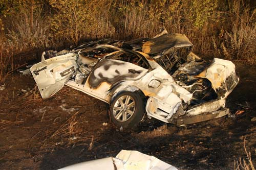

Flaws in Toyota's Software (11) (28) (35) (38) (45)
In the mid-2000’s many Toyota drivers were reporting that their car was accelerating without them touching the pedal. Investigators discovered that software errors were the cause of the unintended acceleration which in rare cases, causes the cars to stall out at high speeds.
There was a series of things wrong with the software installed in Toyota cars: Memory corruption, wrong memory handling, disabling safety systems, systems with single points of failure, and thousands of global variables. This case demonstrates the consequences of not giving enough attention to good programming practices and testing as a result of wanting to launch the product.
The Prius recall also underlines the increased importance of software in modern cars, some of which boast more lines of computer code than a military fighter jet. The recall impacts about 2.4 million vehicles -- 1.25 million in Japan and 830,000 in North America, Toyota spokesman Jean-Yves Jault told Bloomberg Friday. About 807,000 are in the United States. In a few weeks, about 8 million cars were recalled to the factory due to the accelerator problem. Some main Toyota models with this software flaw are Lexus, Yaris, Rav4, Corolla, Aygo, iQ, Auris, Verso and Avensis.

| On 5 February 2010, one car lost control on the 125 state road. But it was not a normal accident. The driver of the Lexus Toyota was the one who called the police, while he was really terrified: "We're in a Lexus... and we're going north on 125 and our accelerator is stuck... there's no brakes... we're approaching the intersection... Hold on... hold on and pray... pray." The call ends with the sound of a crash. The Lexus ES 350 Sedan produced by Toyota collided with a small car, went off the road, turned over, caught fire. This accident killed the driver, his wife, child and brother. The co-founder of computer giant Apple has claimed his Toyota Prius started accelerating on its own because of a software glitch. On Monday, Steve Wozniak told an audience in San Francisco: "Toyota has this accelerator problem we've all heard about. | Well, I have many models of Prius that got recalled, but I have a new model that didn't get recalled. This new model has an accelerator that goes wild, but only under certain conditions of cruise control. And I can repeat it over and over and over again - safely. This is software. It's not a bad accelerator pedal. It's very scary, but luckily for me, I can hit the brakes". A day later, Wozniak told the ABC TV channelinterview Tuesday: "I tap the cruise control lever to increase the speed and it basically goes into an unlimited speed up. If I hit the brake it disables my cruise control and it goes back to normal. But since my foot never touches the pedal - the problem cannot be a sticky accelerator pedal. There might be some bad software in there". |
Solution:
Every recall requires a software update taking less than an hour, and Toyota said to increase testing before the sales of the cars.